SRS

SRS® Wool is a naturally superior, ethical and sustainable fibre, produced from non-mulesed Australian Merino sheep pioneered by Dr Jim Watts.
SRS® Wool is a naturally superior, ethical and sustainable fibre, produced from non-mulesed Australian Merino sheep pioneered by Dr Jim Watts.